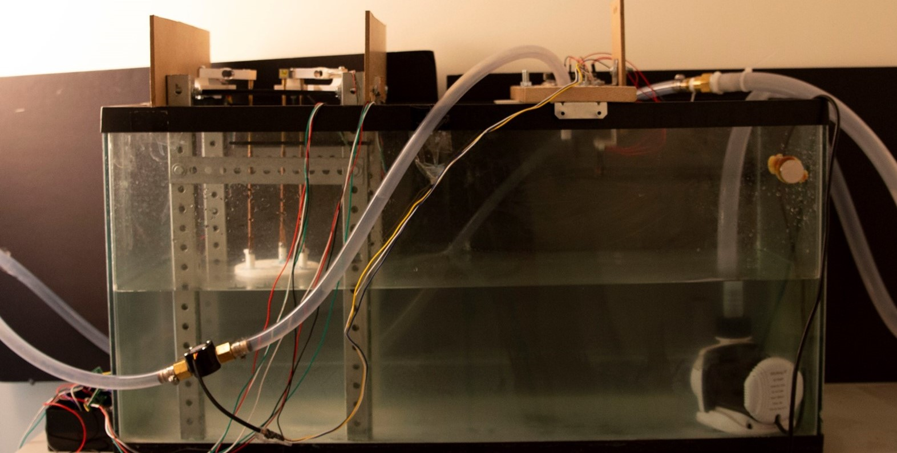
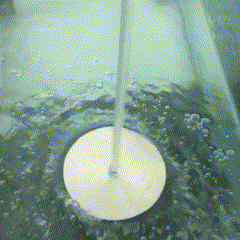

Unsinkable Disk
We investigated the phenomenon of an "unsinkable disk," where a metal disk with a hole in its center, which would normally sink in water, can be made to float when a vertical water jet is directed at it. We explored the key parameters influencing this behavior, including jet speed, jet diameter, hole radius, disk radius, and disk mass. Our approach involved a controlled experimental setup featuring a calibrated water pump, flow meters, various 3D-printed nozzles, and an array of disks with different dimensions. We formulated a theoretical model to analyze the balance of forces, incorporating impinging jet forces, buoyancy, and hydraulic jump effects. Experimental verification was conducted using load cells and range sensors to measure force and height variations. Through our analysis, we demonstrated how different physical parameters interact to determine whether the disk floats or sinks, providing insights into fluid dynamics and jet-induced lift forces.
Python
SciPy
Matplotlib
Arduino
Load Cells
Onshape
FDM Printing
Computational Fluid Dynamics
ANSYS
COMSOL
Finite Element Analysis
Navier Stokes